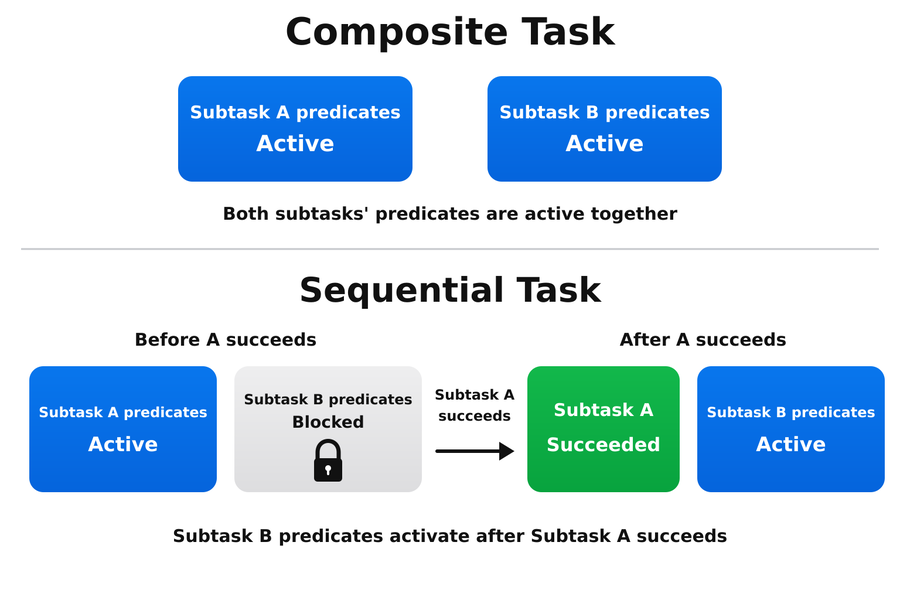

Predicates and Subtask Progress Tracking#
Arena defines task success through ProgressObjective objects. These objectives organize
Boolean predicates into required milestones, such as settling, lifting, and placing an object.
Their scores also describe partial progress when an episode ends before the task is complete.
Every task returns a TaskTerminationCfg from get_termination_cfg(). This configuration
declares its success objectives, named failures, and timeout_s in one place. The
environment builder creates one success termination that advances the objectives and reports
success when all required objectives are complete.
Predicates#
A predicate represents a boolean condition in a task, such as an object settling, being lifted, or reaching its destination. In Arena, a predicate is a callable that receives the manager-based environment (and optionally additional configuration arguments) and returns one Boolean per parallel environment.
Included predicates#
Arena comes with an existing collection of predicates under isaaclab_arena.tasks.predicates, including:
objects_below_velocity_thresholds— all selected objects are below linear and angular velocity thresholds.objects_settled— the same rest check, also recording each object’s first resting pose.object_is_above_height— an object is above a fixed height or its recorded resting height.object_moving— an object exceeds a linear velocity threshold.objects_in_proximity— two objects are within configured axis-aligned distances.object_on_destination— destination-footprint, upward-support, and velocity checks for a placement goal.
Note
objects_settled records each object’s first resting pose. Later predicates can use that
environment-specific pose as a reference, which is more robust than assuming every object starts at
the same world height. Arena clears the recorded poses for the environments being reset.
Defining a custom predicate#
Define a custom predicate when Arena’s included predicates do not express the condition you need. A custom predicate must:
Accept
envas its first argument.Evaluate all parallel environments in one call.
Return a Boolean tensor with shape
(env.num_envs,).
A predicate may accept any task-specific arguments it needs after env. For example:
import torch
def object_inside_x_bounds(env, object_name: str, min_x: float, max_x: float) -> torch.Tensor:
object_x_e = env.arena_world.get_pose_e(object_name)[:, 0]
return (object_x_e >= min_x) & (object_x_e <= max_x)
The arguments after env are configured when the predicate is added to a progress objective
(shown in the next section).
Defining a progress objective#
Add ProgressObjective entries to TaskTerminationCfg.success. Provide exactly one of
predicate_sequence for a list of predicates or predicate_sequences for a dictionary of named lists.
PickAndPlaceTask requires the object to settle, be lifted, and be placed, in that order:
from functools import partial
from isaaclab.envs import mdp
from isaaclab.managers import SceneEntityCfg, TerminationTermCfg
from isaaclab_arena.progress_tracking.progress_objective import ProgressObjective
from isaaclab_arena.tasks.predicates.object_settling import objects_settled
from isaaclab_arena.tasks.predicates.spatial import object_is_above_height, object_on_destination
from isaaclab_arena.tasks.predicates.temporal import TrueForConsecutiveStepsCfg
from isaaclab_arena.tasks.task_termination_cfg import TaskTerminationCfg
def get_termination_cfg(self) -> TaskTerminationCfg:
return TaskTerminationCfg(
success=[
ProgressObjective(
name="pick_and_place",
predicate_sequence=[
partial(
objects_settled,
object_names=[self.pick_up_object.name],
),
partial(
object_is_above_height,
object_name=self.pick_up_object.name,
use_settled_state=True,
),
TrueForConsecutiveStepsCfg(
predicate=partial(
object_on_destination,
object_cfg=SceneEntityCfg(self.pick_up_object.name),
destination_cfg=SceneEntityCfg(self.destination_location.name),
contact_sensor_cfg=self.contact_sensor_cfg,
force_threshold=self.force_threshold,
velocity_threshold=self.velocity_threshold,
support_cone_half_angle_rad=self.support_cone_half_angle_rad,
),
required_steps=self.placement_consecutive_steps,
),
],
),
],
failures={
"object_dropped": TerminationTermCfg(
func=mdp.root_height_below_minimum,
params={
"minimum_height": self.background_scene.object_min_z,
"asset_cfg": SceneEntityCfg(self.pick_up_object.name),
},
),
},
timeout_s=self.episode_length_s,
)
functools.partial supplies the arguments for a single-step check.
TrueForConsecutiveStepsCfg wraps that configured callable when it must remain true for several steps.
An instantaneous check that needs environment-dependent initialization can also be supplied
as a TerminationTermCfg inside the requirement. For a callable class, ProgressObjectiveRunner
constructs it with (cfg, env); it does not need to inherit from ManagerTermBase.
This initialization is separate from counting steps.
PickAndPlaceTask defaults to placement_consecutive_steps=1. Set it to a larger positive
integer, such as 10, to require placement, support, and low speed to hold together for that
many consecutive control steps.
Use a dictionary to track several sequences independently. This example requires any two
objects to be lifted and placed. Each entry, such as can_lifted, is a configured callable:
objective = ProgressObjective(
name="pack_objects",
predicate_sequences={
"can": [can_lifted, can_placed],
"bottle": [bottle_lifted, bottle_placed],
"box": [box_lifted, box_placed],
},
logical="choose",
K=2,
)
logical and K control how completed predicate sequences make the objective complete:
all— every sequence must complete. This is the default.any— one sequence must complete.choose— at leastKsequences must complete.
Completed stages are remembered until the environment resets. Separate chains therefore describe milestones that may complete at different times. If several conditions must hold simultaneously, combine them into one predicate. For example, checking that all gears are seated together requires one combined condition; remembering each gear’s earlier placement would allow a gear to be removed before the task completes.
Conditions that must remain true#
Use TrueForConsecutiveStepsCfg around a configured callable:
placement_held = TrueForConsecutiveStepsCfg(
predicate=placed_and_stable,
required_steps=10,
)
placed_and_stable returns one Boolean per environment; it does not maintain a counter.
ProgressObjectiveRunner creates an internal _TrueForConsecutiveSteps instance from each
TrueForConsecutiveStepsCfg occurrence. The runner evaluates the predicate and passes its results
and active environments to that instance. _TrueForConsecutiveSteps stores the per-environment
counts: true adds one; false clears the streak.
The runner resets it through the existing TaskSuccessTerm / ProgressTracker episode-reset path.
To require overlapping conditions, combine them before counting. Here A must rest while B is touching for the same ten steps, after lifting and placement:
def both_conditions_hold(env):
return object_a_is_resting(env) & object_b_is_touching(env)
objective = ProgressObjective(
name="place_and_hold",
predicate_sequence=[
lifted,
placed,
TrueForConsecutiveStepsCfg(
predicate=both_conditions_hold,
required_steps=10,
),
],
)
Two separate sequence entries would allow the resting and touching periods to happen at different times. The combined predicate restarts its streak whenever either condition becomes false.
TaskSuccessTerm supplies the environment’s control-step indices automatically, so repeated
success checks do not count twice. When using ProgressTracker.step() directly with consecutive-step
requirements, pass one integer index per environment, for example
tracker.step(env, step_index=env.episode_length_buf). Skipping an index clears the streak;
unobserved steps cannot prove the condition held continuously.
Subtask progress tracking in composite and sequential tasks#
CompositeTaskBase collects subtask objectives in a flat TaskTerminationCfg.success list.
It prefixes their names with subtask_<index>/ and sets parent_subtask_idx to identify
which subtask each objective belongs to. Standalone tasks retain their original objective names,
such as pick_and_place. Nested composite or sequential tasks are not supported.
For an order-independent composite task, every subtask’s progress objectives are active.
With CompositeTaskBase(..., subtasks_are_sequential=True), ProgressTracker
activates each subtask only after all objectives of the preceding subtask complete in that
environment. The next subtask starts on the following environment step. A later subtask’s predicates
cannot advance before that subtask becomes active, even if their physical conditions already happen
to be true.
ProgressTracker determines task success and reports the same objective completion history.
Completed milestones remain recorded. TaskTerminationCfg.desired_subtask_success_state
preserves the composition’s optional final-condition checks. Reports contain the flat objectives
and their weighted overall progress; subtask metrics read ProgressTracker.get_subtask_completion().
For a consecutive-step final condition, these checks continue updating its counter. If the condition
becomes false, a new streak is required, but the recorded subtask completion is kept.
There are no additional parent-objective reports. See
Composite and Sequential Tasks for composition and success semantics.
{kind=link}

Composite tasks activate tracking on all subtasks’ predicates together, while sequential tasks activate tracking on each subtask’s predicates only after the preceding subtask succeeds.#
Reading subtask progress tracking at runtime#
ProgressTrackingRecorder puts progress results in the environment’s extras dictionary.
Read each environment’s state and completed-predicate events as follows:
progress = env.unwrapped.extras["progress_tracking"]
state = progress["states"][env_id]
print(state.overall_score, state.all_complete)
objective = state.progress_objectives["pick_and_place"]
print(objective.score, objective.is_complete)
print(objective.active_predicates)
for event in progress["events"][env_id]:
print(event.step, event.progress_objective, event.group, event.predicate_name)
After an automatic reset, env.extras["progress_tracking"] still shows the finished episode
until the next step.
Arena’s episode recorder also serializes the final progress state and predicate events into the episode’s JSONL record when an output path is configured. Tasks without progress objectives have no success termination or progress-tracking configuration and produce no progress fields.
For example, one entry of the JSONL record may look like this (placement predicate name shortened):
{
"progress": {
"overall_score": 0.67,
"all_complete": false,
"objectives": {
"pick_and_place": {
"score": 0.67,
"is_complete": false,
"completed_groups": 0,
"total_groups": 1,
"active_predicates": {
"default_group": "object_on_destination"
}
}
},
"events": [
{
"step": 4,
"objective": "pick_and_place",
"group": "default_group",
"predicate_index": 0,
"predicate_name": "objects_settled",
"score_delta": 0.33
},
{
"step": 18,
"objective": "pick_and_place",
"group": "default_group",
"predicate_index": 1,
"predicate_name": "object_is_above_height(object_name='can', use_settled_state=True)",
"score_delta": 0.33
}
]
}
}
The object has settled and been lifted: two of three predicates are complete, giving a score of 0.67.
Placement is still required. The two events record when settling and lifting completed.